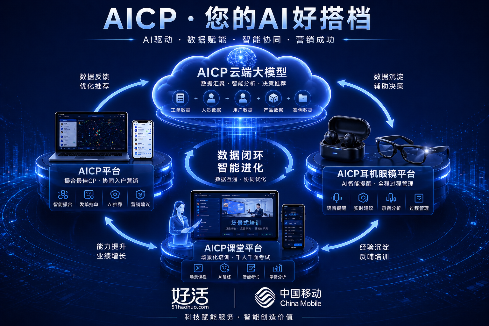
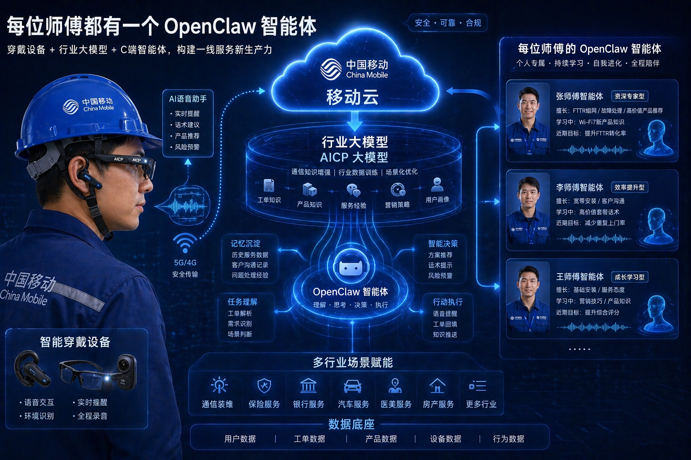
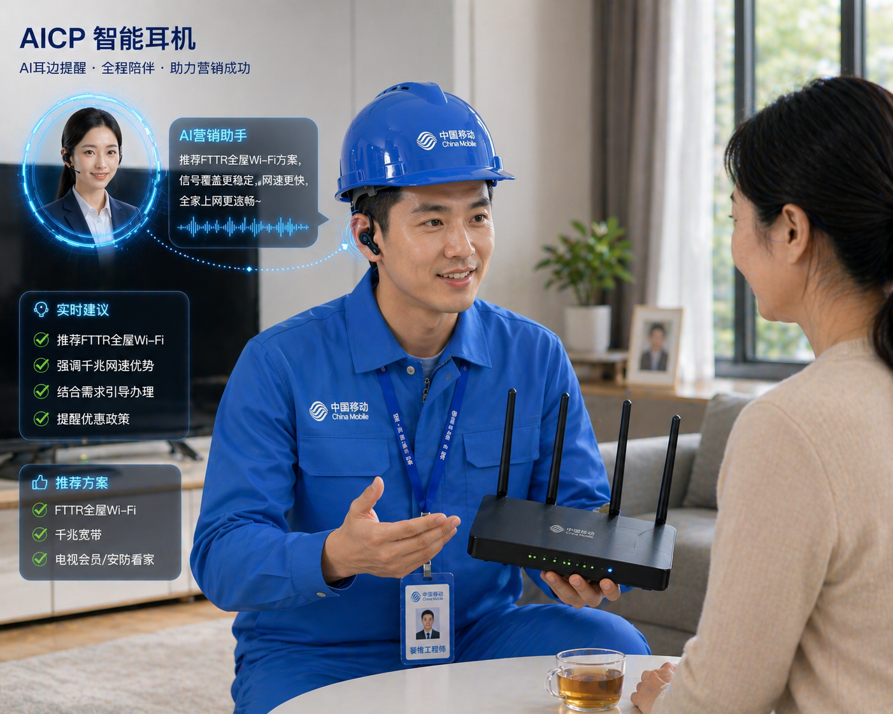
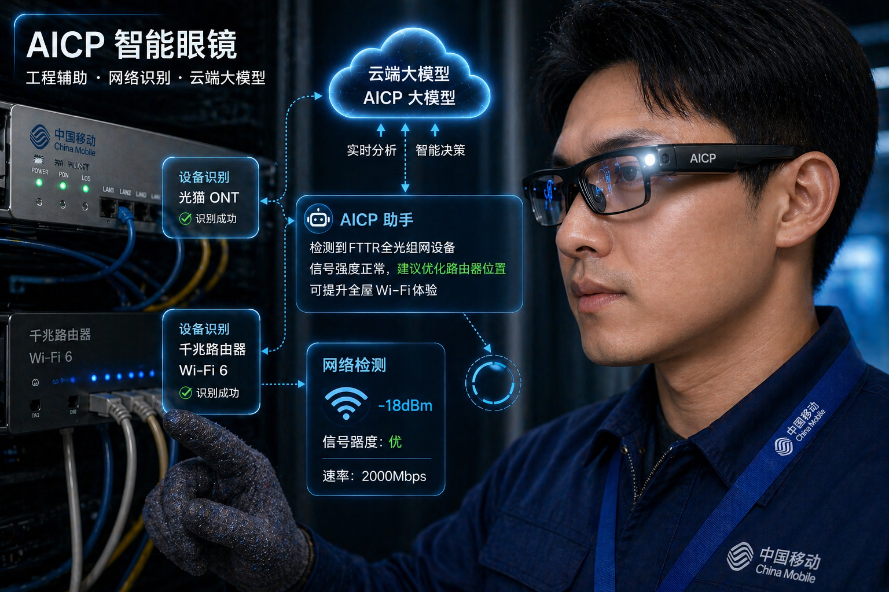
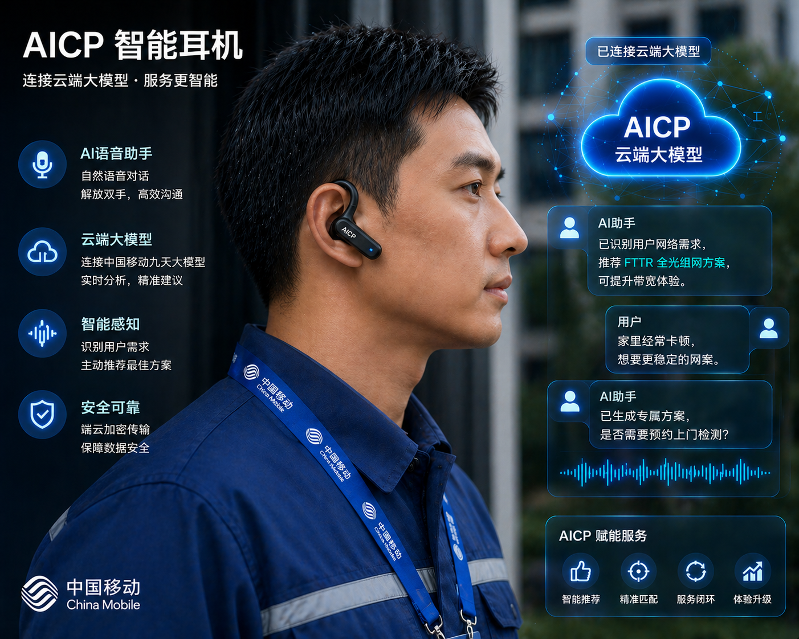
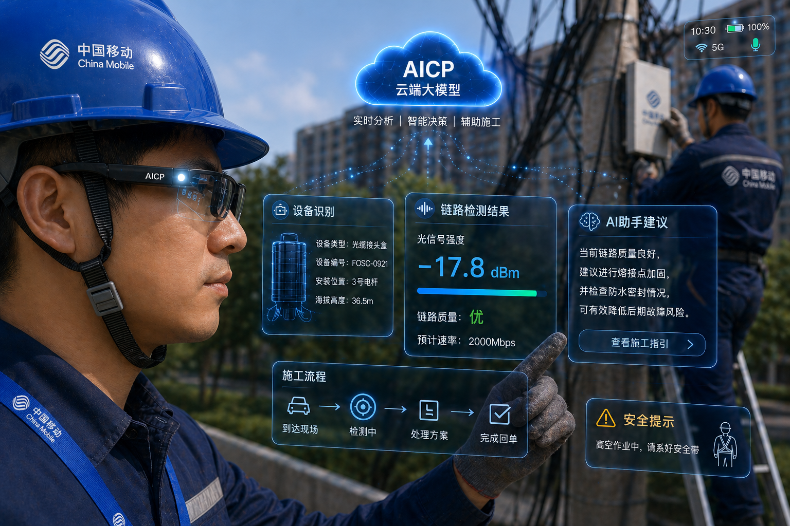
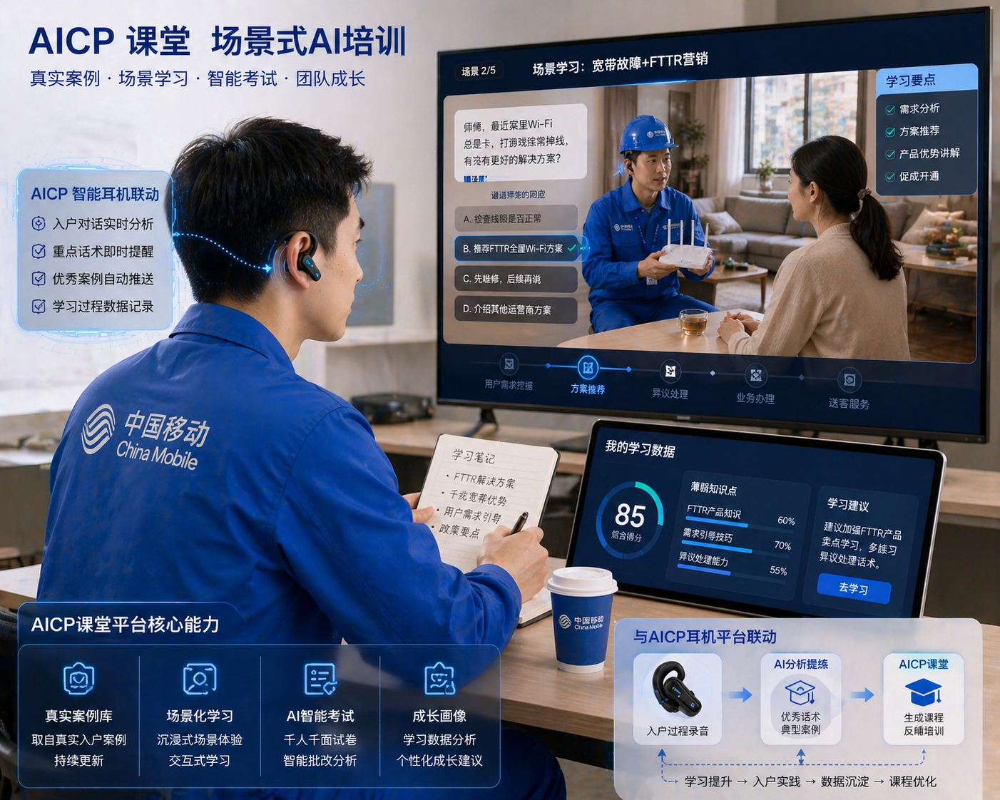

装维发单
一线师傅基于入户维修任务发起协同需求。
存量经营时代
传统固定营维 CP 容易遇到时间难匹配、分配难持续、协作难稳定的问题。AICP 将一次上门工单拆成可撮合、可提醒、可沉淀的数据单元，让一线服务既完成维修，也自然承接精准推荐。
装维、营销排班错位，入户机会很难被稳定利用。
酬金与责任边界不清，协作积极性难以长期保持。
不同客户、产品、区域需要不同组合，固定搭档弹性不足。
AICP 工作流
一线师傅基于入户维修任务发起协同需求。
按距离、时间、人员画像、任务类型推荐最佳营维 CP。
智能耳机低干扰播报任务重点、标准话术与产品建议。
服务过程进入课堂平台，沉淀优秀案例与能力图谱。
AICP 云端大模型汇聚数据，完成智能分析、决策推荐与持续优化。

个人智能体
AICP 个人智能体沉淀工单处理、客户画像、产品推荐、现场话术与复盘案例，让装维师傅和营销人员在入户前、中、后都能获得连续支撑。

碳硅 CP

入户前提醒任务重点，入户中辅助沟通，入户后沉淀语音记录与服务过程。

智能眼镜识别线路、端口与施工动作，辅助工程过程可视化，并提示安全规范。

任务内容、标准话术、产品政策、满意度提醒在服务过程中轻量出现。

工程辅助、安全生产监督与现场采集，让一线服务更高效、更规范。

真实案例回流训练，生成场景化课程、千人千面考试与团队能力分析。
人员画像与成功率
AICP 沉淀每单表现，把装维人员与营销人员按产品掌握程度、营销能力、营销意愿形成头部、腰部、尾部 262 分层。
面向高价值客户、复杂产品和重点攻坚场景，由头部经验带动腰部能力提升。
支撑大多数日常入户工单，保证服务质量、推荐节奏和转化动作稳定可复制。
让尾部人员在真实场景中跟单成长，把一次协作沉淀为下一次独立作战能力。
装维师傅完成宽带故障定位和网络恢复，营销人员基于家庭户型、用网习惯与 AICP 推荐方案沟通 FTTR、千兆提速、家庭安防等产品。客户信任来自服务现场，入户营销成功率达到 50% 以上，转化动作也更自然。
试点成效
AICP 通过工单、语音、用户画像、产品推荐与培训反馈串联业务动作，让团队看见触点量、转化率、协作效率与能力成长。
入户服务触点被平台记录、分类与复盘。
FTTR、千兆提速、电视安防等推荐形成转化。
AICP 平台、耳机、眼镜、课堂与云端大模型协同运行。
宣传片
落地共创
适用于宽带维修、FTTR 推荐、家庭安防、社区触点运营、一线培训复盘等场景。